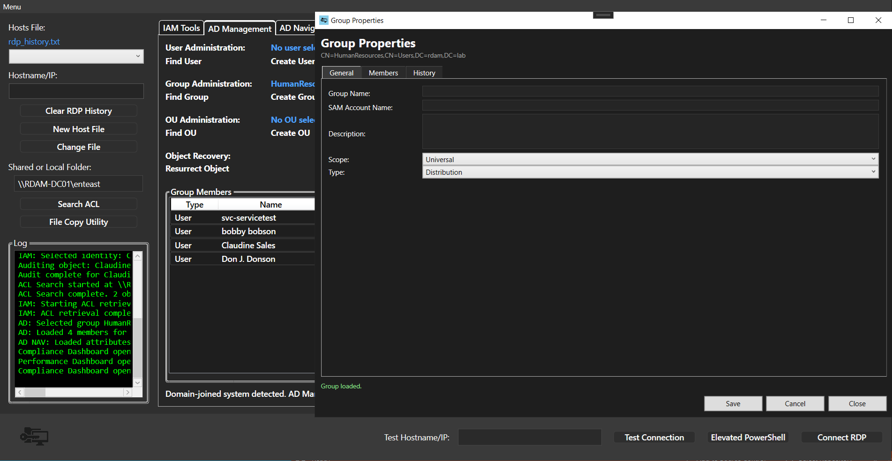
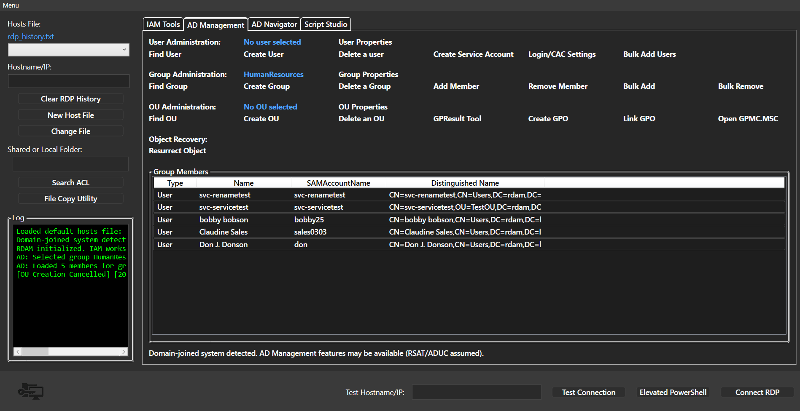
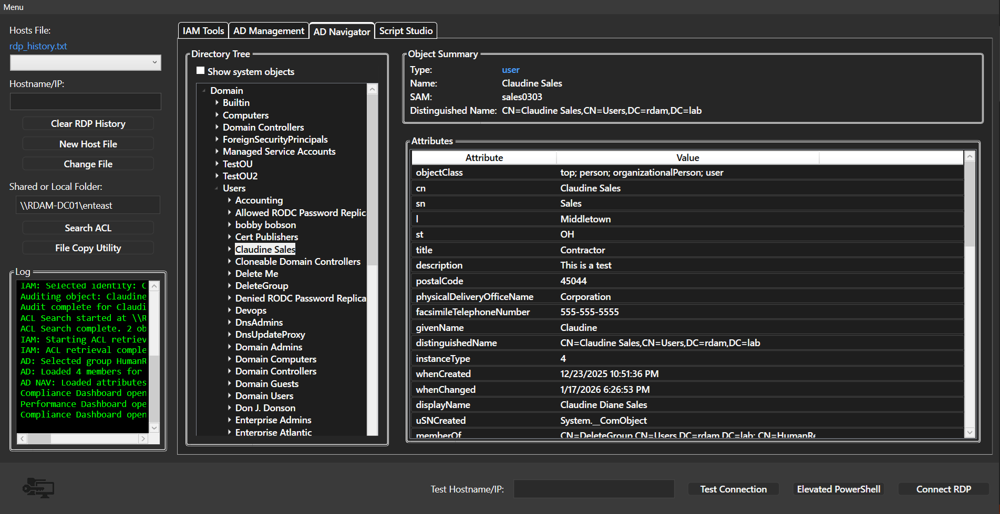
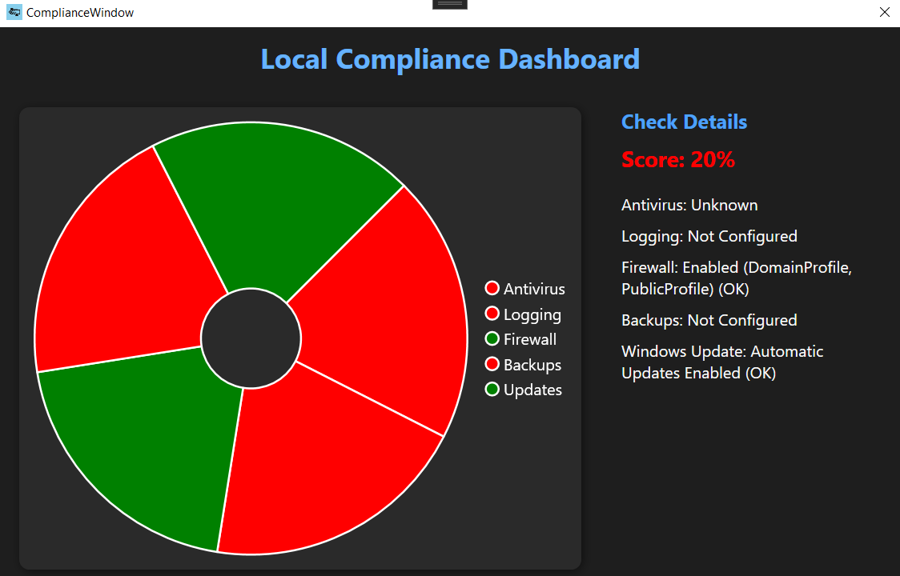
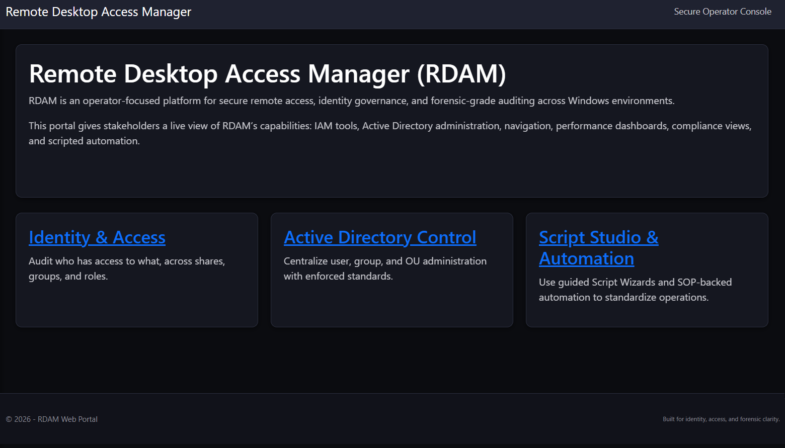
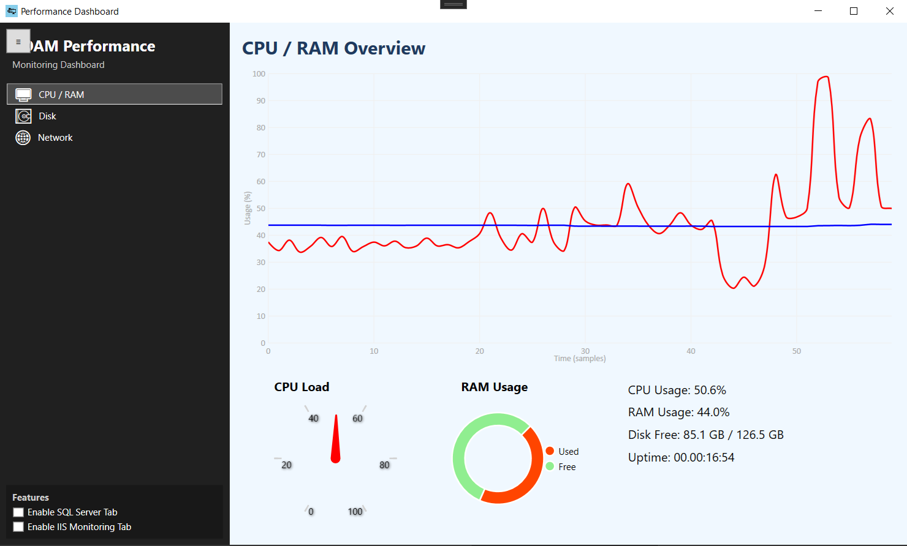
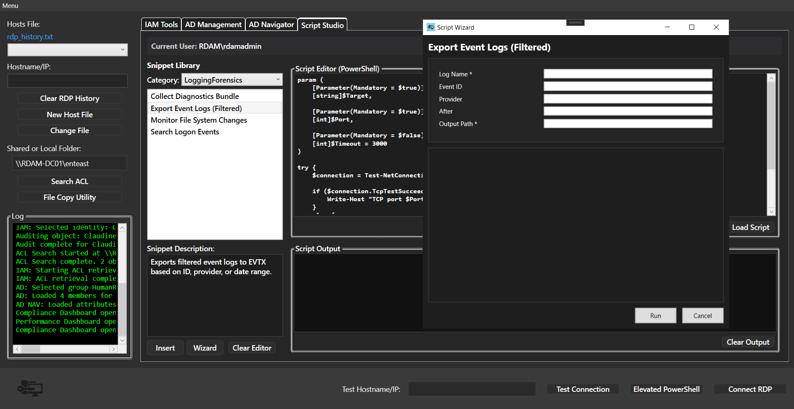
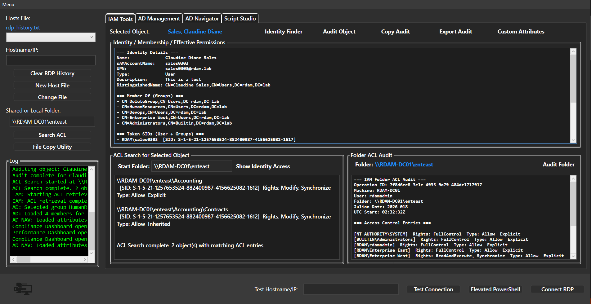
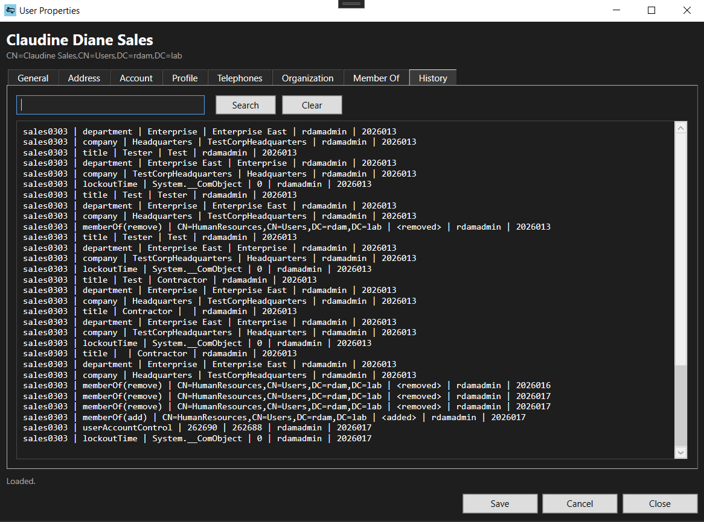

Active Directory Group Properties panel showing configuration and permission details.

AD Management tab interface for user, group, and policy control.

Navigator for traversing Active Directory hierarchy and object access.

Compliance dashboard with red/green indicators for system health and policy adherence.

Main landing page with navigation tiles and quick-access panels.

Performance metrics window with line graph and pie chart for system load.

Script development environment for batch and PowerShell automation.

Identity access mappings showing user-resource relationships.

Scaled version of identity access view for improved layout clarity.

Historical changes to user properties including group membership and account status.